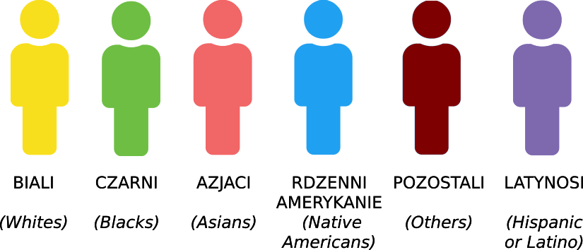
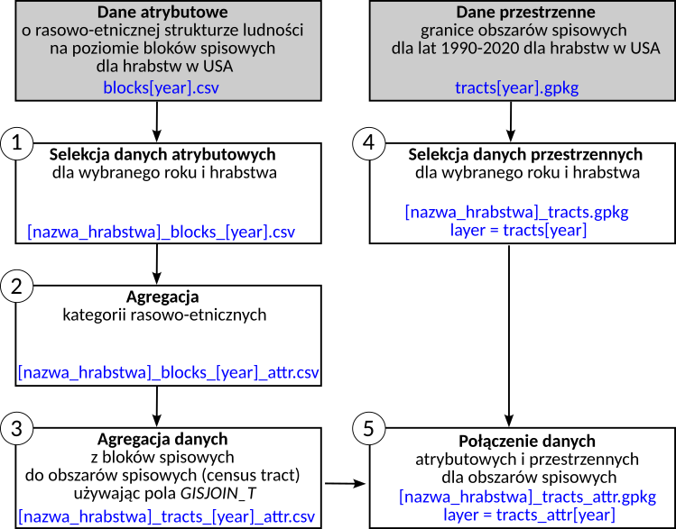

| Kod | Kategoria |
|---|---|
| ET2001 | Not Hispanic origin : White |
| ET2002 | Not Hispanic origin: Blacks |
| ET2003 | Not Hispanic origin: American Indian, Eskimo, or Aleut |
| ET2004 | Not Hispanic origin: Asian alone or Pacific Islander |
| ET2005 | Not Hispanic origin: Other race |
| ET2006 | Hispanic origin : White |
| ET2007 | Hispanic origin : Blacks |
| ET2008 | Hispanic origin : American Indian, Eskimo, or Aleut |
| ET2009 | Hispanic origin : Asian alone or Pacific Islander |
| ET2010 | Hispanic origin : Other race |
4 Przygotowanie danych do analizy
4.1 Dane
Dane zostały pobrane ze strony http://nhgis.org.
W nieniejszym skrypcie zostaną wykorzystane dwa rodzaje danych:
- Dane dotyczące struktury rasowo-etnicznej wybranych hrabstw zagregowane do bloków spisowych (ang. blocks) dla lat 1990, 2000, 2010, 2020 (dane_atrybutowe.zip)
- Granice obszarów spisowych (ang. census tracts) dla wybranych hrabstw dla lat 1990, 2000, 2010, 2020 (dane_przestrzenne.zip)
4.2 Dane dotyczące struktury rasowo-etnicznej
Dane dotyczące struktury rasowo-etnicznej wybranych hrabstw zagregowane do bloków spisowych zawierają następujące kolumny:
GISJOIN - identyfikator danych na poziomie bloków spisowych, pozwalający na połączenie danych atrybutowych z danymi przestrzennymi
GISJOIN_T - identyfikator danych na poziomie obszarów spisowych,
- pole GISJOIN_T będzie wykorzystane do zagregowania danych z bloków spisowych do obszarów spisowych;
- pole GISJOIN_T pozwala na połączenie danych atrybutowych z danymi przestrzennymi na poziomie obszarów spisowych.
COUNTY_CODE - kod hrabstwa składający się z dwóch elementów - kodu stanu oraz kodu hrabstwa.
- Pozwala na identyfikację hrabstw w Stanach Zjednoczonych.
- Kod zostanie użyty do wyselekcjonowania danych dla wybranego hrabstwa.
STATEA - kod stanu
COUNTYA - kod hrabstwa
TRACTA - kod obszaru spisowego
BLOCKA - kod bloku
zestaw kolumn zawierający dane dotyczące rasowo-etnicznej struktury ludności.
4.3 Granice obszarów spisowych
Dane zawierają m.in pola:
GISJOIN - identyfikator danych na poziomie obszarów spisowych, pozwala na połączenie danych atrybutowych z danymi przestrzennymi na poziomie obszarów spisowych.
- Uwaga! Aby połączyć dane atrybutowe dla obszarów spisowych z danymi przestrzennymi należy użyć pola GISJOIN_T z plików tekstowych oraz pola GISJOIN w danych przestrzennych.
CNT_CODE - kod hrabstwa składający się z dwóch elementów - kodu stanu oraz kodu hrabstwa.
- Pozwala na identyfikację hrabstw w Stanach Zjednoczonych.
- Kod zostanie użyty do wyselekcjonowania danych dla wybranego hrabstwa. W danych w plikach tekstowych kod ten zapisany jest w kolumnie COUNTY_CODE.
4.4 Kategorie rasowo-etniczne w Spisach Ludności
Podział na kategorie rasowo-etniczne zmieniał się między Spisami Ludności. W ćwiczeniach będziemy wykorzystywać podział na 6 grup:
- Osoby nie wykazujące pochodzenia Latynowskiego (Not Hispanic or Latino) w podziale na grupy rasowe:
- Biali,
- Czarni,
- Azjaci,
- Rdzenni Amerykanie,
- Pozostali (tj. osoby, które wskazały przynależność do więcej niż jednej grupy rasowo-etnicznej)
- Latynosi (bez względu na grupę rasową)

Rok 1990
Rok 2000
| Kod | Kategoria |
|---|---|
| FYF001 | Not Hispanic or Latino : White alone |
| FYF002 | Not Hispanic or Latino : Black or African American alone |
| FYF003 | Not Hispanic or Latino : American Indian and Alaska Native alone |
| FYF004 | Not Hispanic or Latino : Asian alone |
| FYF005 | Not Hispanic or Latino : Native Hawaiian and Other Pacific Islander alone |
| FYF006 | Not Hispanic or Latino : Some other race alone |
| FYF007 | Not Hispanic or Latino : Two or more races |
| FYF008 | Hispanic or Latino : White alone |
| FYF009 | Hispanic or Latino : Black or African American alone |
| FYF010 | Hispanic or Latino : American Indian and Alaska Native alone |
| FYF011 | Hispanic or Latino : Asian alone |
| FYF012 | Hispanic or Latino : Native Hawaiian and Other Pacific Islander alone |
| FYF013 | Hispanic or Latino : Some other race alone |
| FYF014 | Hispanic or Latino : Two or more races |
Rok 2010
| Kod | Kategoria |
|---|---|
| H7Z001 | Total population |
| H7Z002 | Not Hispanic or Latino |
| H7Z003 | Not Hispanic or Latino : White alone |
| H7Z004 | Not Hispanic or Latino : Black or African American alone |
| H7Z005 | Not Hispanic or Latino : American Indian and Alaska Native alone |
| H7Z006 | Not Hispanic or Latino : Asian alone |
| H7Z007 | Not Hispanic or Latino : Native Hawaiian and Other Pacific Islander alone |
| H7Z008 | Not Hispanic or Latino : Some other race alone |
| H7Z009 | Not Hispanic or Latino : Two or more races |
| H7Z010 | Hispanic or Latino |
Rok 2020
| Kod | Kategoria |
|---|---|
| U7C001 | Total population |
| U7C002 | Hispanic or Latino |
| U7C005 | Not Hispanic or Latino: White alone |
| U7C006 | Not Hispanic or Latino: Black or African American alone |
| U7C007 | Not Hispanic or Latino: American Indian and Alaska Native alone |
| U7C008 | Not Hispanic or Latino: Asian alone |
| U7C009 | Not Hispanic or Latino: Native Hawaiian and Other Pacific Islander alone |
| U7C010 | Not Hispanic or Latino: Some other race alone |
| U7C011 | Not Hispanic or Latino: Two or more races |
4.5 Przygotowanie danych do analizy
Przygotowanie danych do analizy składa się z 5 etapów:
Etap 1: Wyselekcjonowanie danych atrybutowych o strukturze ludności dla wybranego hrabstwa.
- Dane atrybutowe zapisane są w 4 plikach csv: blocks1990.csv, blocks2000.csv, blocks2010.csv, blocks2020.csv
- Z pliku dla danego roku należy wybrać dane dla wybranego hrabstwa. Selekcję należy wykonać posługując się kodem hrabstwa zapisanym w polu COUNTY_CODE
Etap 2: Agregacja kategorii rasowo-etnicznych.
Podział na kategorie rasowo-etniczne zmieniał się między Spisami Ludności. W ćwiczeniach będziemy wykorzystywać podział na 6 grup:
- Osoby nie wykazujące pochodzenia Latynowskiego (Not Hispanic or Latino) w podziale na grupy rasowe: Biali, Czarni, Azjaci, Rdzenni Amerykanie, Pozostali (tj. osoby, które wskazały przynależność do więcej niż jednej grupy rasowo-etnicznej)
- Latynosi (bez względu na grupę rasową)
W tabelach w sekcji Kategorie rasowo-etniczne w Spisach Ludności zestawione zostały pola, które należy zaagregować.
Plik po agregacji powinien zawierać kolumny: GISJOIN, GISJOIN_T, oraz zaagregowane kategorie rasowo-etniczne: WHITE, BLACK, ASIAN, AM, OTHER, HISPANIC
Plik ze zagregowanymi kategoriami rasowo-etnicznymi należy zapisac jako [nazwa_hrabstwa]_[year]_blocks_attr.csv
Etap 3: Agregacja danych z bloków spisowych do obszarów spisowych (census tract).
- W wyniku tego etapu dane na poziomie bloków spisowych zapisane w pliku [nazwa_hrabstwa]_[year]_blocks_attr.csv zostaną zaagregowane do obszarów spisowych (ang. census tract, większe jednostki spisowe)
- Identyfikator obszarów spisowych znajduje się w polu GISJOIN_T. Należy zatem użyć pola GISJOIN_T, aby dane z bloków zaagregować do obszarów spisowych.
- Zaagregowane dane należy zapisać w pliku [nazwa_hrabstwa]_[year]_tracts_attr.csv
Etap 4: Wyselekcjonowanie danych przestrzennych dla wybranego hrabstwa.
Granice obszarów spisowych dla lat 1990, 2000, 2010, 2020 zostały zapisane w pliku tracts_[year].gpkg
Z pliku dla danego roku należy wybrać dane dla wybranego hrabstwa. Selekcję należy wykonać posługując się kodem hrabstwa zapisanym w polu CNT_CODE
Wyselekcjonowane dane należy zapisać w geopaczce [nazwa_hrabstwa]_tracts.gpkg, nazwa warstwy tracts[year].
- Uwaga! Na tym etapie należy utworzyć jedną geopaczkę dla hrabstwa zawierającą granice dla 4 lat.
Etap 5: Połączenie danych atrybutowych i przestrzennych.
W tym etapie należy do granic obszarów spisowych (wynik wykonania etapu 4) dołączyć dane o strukturze ludności w obszarach spisowych (wynik wykonania etapu 3)
W pliku [nazwa_hrabstwa]tracts[year]_attr.csv identyfikator obszaru spisowego znajduje się w polu GISJOIN_T. W danych przestrzennych ([nazwa_hrabstwa].gpkg, nazwa warstwy tracts[year]) identyfikator obszaru spisowego znajduje się w polu GISJOIN.
połączone dane należy zapisać w geopaczce [nazwa_hrabstwa]_tracts_attr.gpkg, nazwa warstwy tracts_attr[year]
- Uwaga! Dane dla 4 lat należy zapisać w tej samej geopaczce.

4.6 Pliki wynikowe
Podsumowując, w wyniku przygotowania danych należy zachować 4 pliki zapisane w dwóch folderach:
folder data_attr
- [nazwa_hrabstwa]blocks[year]_attr.csv - zawierający dane o strukturze ludności na poziomie bloków spisowych
- [nazwa_hrabstwa]tracts[year]_attr.csv - zawierający dane o strukturze ludności na poziomie obszarów spisowych (census tracts)
folder data_geo
- [nazwa_hrabstwa]_tracts.gpkg - zawierającą warstwy tracts[year] z granicami obszarów spisowych
- [nazwa_hrabstwa]_tracts_attr.gpkg - zawierającą warstwy tracts_attr[year] z granicami obszarów spisowych z dołączoną informacją o rasowo-etnicznej strukturze ludności.